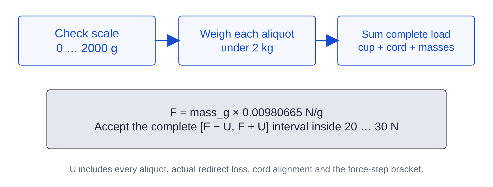

Payload / release-force fixture101 / 179
Check the scale with reference weights
The owned scale reads to 0.1 g and holds 2 kg. Reference checks bound error over that range before aliquots are combined into a larger test load.
Add1 kg M1 weight · M2 weight set totaling 1 kg · result sheet
Tools / setupOwned scale · level rigid bench · two-minute warmup

- After warmup, check 0, 500, 1000, 1500 and 2000 g ascending and descending, for three complete cycles.
- Require every reference result within ±0.3 g and unloaded zero 0.0 ±0.1 g. If needed, span-calibrate at 1 kg and repeat every check.
- Record stated weight classes and certificate status: combined reference MPE at 2000 g is 0.224 g; resolution alone is not accuracy.
- Repeat zero and 1 kg checks each session. Assign a conservative 1.0 g uncertainty to every weighed aliquot after passing.
Ready when
All three ascending/descending cycles and the current session zero/span check pass; the scale never exceeds its 2 kg capacity. An excessive error, drifting zero or overload fails the mass record. Correct/calibrate the scale and repeat before calculating force.